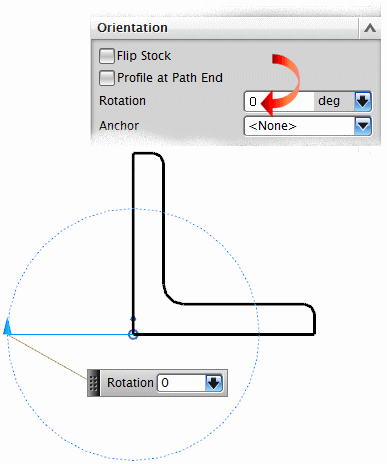
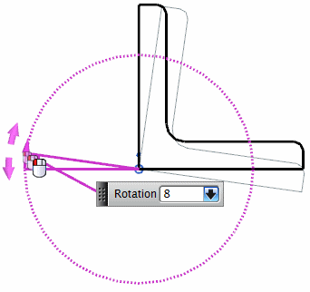
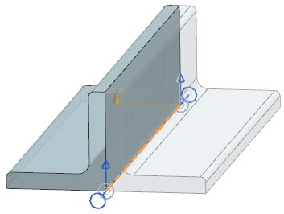

使用结构性型材，比如角钢或者 I 形梁时，型材的端口旋转矢量将决定它在路径中的初始方向。在大多数情况下，您可能都需要在放置型材后更改这个方向。
方向组中提供了用于旋转非圆形型材的工具。

要旋转型材的轮廓，在旋转输入框中键入角度值并回车。您也可以直接在屏显输入框中键入角度值，正的值将使型材绕箭头方向旋转，负值则绕相反方向。
您同样可以使用旋转手柄来手动旋转型材。绕原点拖动箭头将使型材绕管线路径旋转。

要查看型材与您的光标一起旋转的动态图像，确保已选中预览复选框。
翻转型材
关于端口对齐矢量以及旋转箭头所成的平面对型材轮廓进行镜像。

路径端点的轮廓
在管线段终点显示路径横截面。